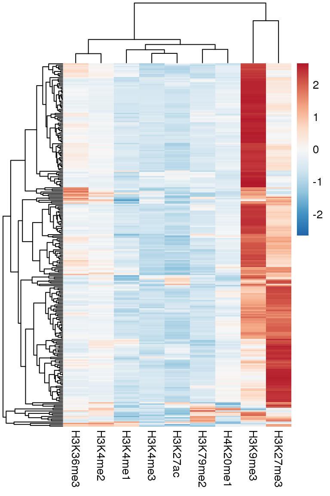
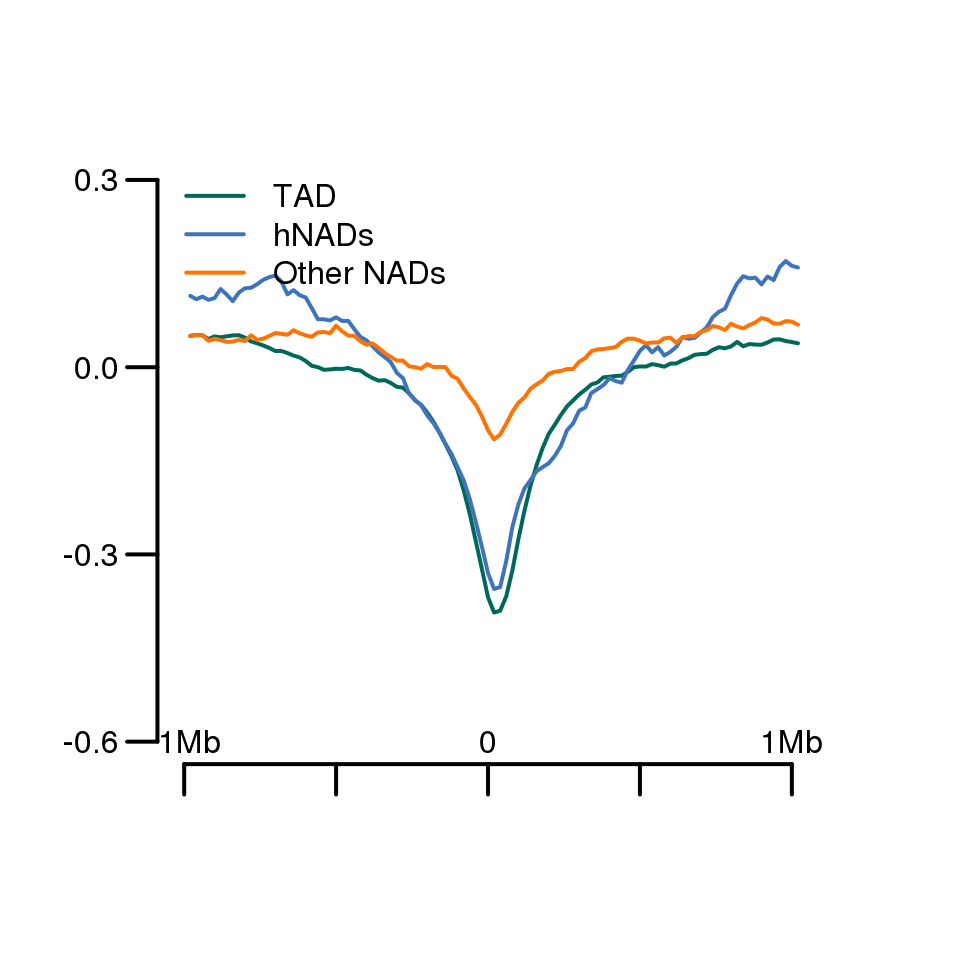

7 Figure6
7.1 Fig.6a
df = read.csv('data/6A.csv',header = T,row.names = 1)
head(df[,1:5])## H3K9me3 H3K79me2 H3K4me3 H3K27ac H4K20me1
## 10-18973000-21147000 6.884168 1.906370 1.701946 1.507892 2.501307
## 10-35852000-39154000 9.584638 8.280898 5.189853 4.467891 8.886078
## 10-42355000-46819000 16.822584 29.624700 18.112826 16.958644 30.134415
## 10-49287000-50695000 5.028139 3.612156 2.665622 2.026260 4.213101
## 10-52403000-54072000 4.802725 2.621680 2.740081 3.049723 3.194251
## 10-54247000-59933000 7.437230 2.206406 2.207491 1.835788 2.687603library(RColorBrewer)
suppressMessages(library(pheatmap))
pheatmap(df,scale = 'row',show_rownames = F,
color = rev(colorRampPalette(c(brewer.pal(9,"RdBu")))(1000))
)
7.2 Fig.6b,6e were produced by deeptools (https://github.com/deeptools/deepTools) with bigwig files.
7.3 Fig.6c
hNAD = read.table("data/hNAD.bed",stringsAsFactors = F,as.is = T)
hNAD[, 4] <- hNAD[, 3] - hNAD[, 2]
colnames(hNAD) <- c('chr', 'start', 'end', 'length')
hNAD_boundary <- data.frame(rbind(as.matrix(hNAD[, c(1, 2)]), as.matrix(hNAD[, c(1, 3)])))
other = read.table("/lustre/user/liclab/pengt/projects/nucleus/new/NAIR/other.bed",stringsAsFactors = F,as.is = T)
other[, 4] <- as.numeric(other[, 3]) - as.numeric(other[, 2])
colnames(other) <- c('chr', 'start', 'end', 'length')
other_boundary <- data.frame(rbind(as.matrix(other[, c(1, 2)]), as.matrix(other[, c(1, 3)])))
TAD_boundary = read.table("data/all.boundary",as.is = T)
TAD_boundary$V5 = TAD_boundary$V2-1
TAD_boundary = TAD_boundary[,c(1,5)]
TAD_boundary = as.matrix(TAD_boundary)
insulationScore <- read.table("data/all.score",stringsAsFactors = F)
colnames(insulationScore) <- c('chr', 'start', 'end', 'insulation_score')
generate_boundary_insulatin_score_matrix <- function( dataframe, insulationScore, window = '2mb' ){
# 生成一个矩阵，每一行都是一个boundary,包括了其上下游个1Mb的insulationScore的信息
boundary_insulationScore <- matrix(nrow = dim(dataframe)[1], ncol = 101 )
# 每一个循环处理一个TAD boundary
# 第一步：取出insulationScore
# 第二步：放入新的matrix中
# 分三种情况：boundary在N, C末端，或者在中间位置。
for(i in seq(1, dim(dataframe)[1])){
chr <- dataframe[i, 1] # chromosome name
sub_insulationScore <- insulationScore[insulationScore$chr == chr, ] # 此boundary所在的染色体的score矩阵
index = which( as.numeric(dataframe[i, 2]) <= as.numeric(sub_insulationScore$end) )[1] # 此boundary所在的bin的位置
if(index < 51){ # N terminal
score <- sub_insulationScore[ ( 1 : (index + 50)) , ]$insulation_score
boundary_insulationScore[i, ( 51 - index + 1) : 101 ] <- score
}else if( (dim(sub_insulationScore)[1] - index) < 50){ # C terminal
score <- sub_insulationScore[ ( (index - 50) : dim(sub_insulationScore)[1] ) , ]$insulation_score
boundary_insulationScore[i, 1: ( 51 + (dim(sub_insulationScore)[1] - index) )] <- score
}else{ # In the middle
boundary_insulationScore[i,] <- sub_insulationScore[ ((index - 50) : (index + 50)), ]$insulation_score
}
}
return(boundary_insulationScore)
}
TAD_boundary_insulationScore <- generate_boundary_insulatin_score_matrix(TAD_boundary, insulationScore)
hNAD_boundary_insulationScore <- generate_boundary_insulatin_score_matrix(as.matrix(hNAD_boundary) , insulationScore)
other_boundary_insulationScore <- generate_boundary_insulatin_score_matrix(as.matrix(other_boundary) , insulationScore)
plot.new()
plot.window(xlim = c(0, 110), ylim =c(-0.6, 0.3) )
lines(1:101, apply(TAD_boundary_insulationScore, 2, median), col = '#00685A', lwd = 2)
lines(1:101, apply(na.omit(hNAD_boundary_insulationScore), 2, median), col = '#4074BA', lwd = 2)
lines(1:101, apply(na.omit(other_boundary_insulationScore), 2, median), col = '#FF7304', lwd = 2)
axis(side = 1, lwd = 2,at = c(0,25,50,75,100), tck= -0.05,labels = F)
text(0,-0.6,'-1Mb')
text(50,-0.6,'0')
text(100,-0.6,'1Mb')
axis(side = 2, lwd = 2, at = c(-0.6, -0.3, 0, 0.3), tck= -0.05,labels = T,las = 1)
legend("topleft", legend = c("TAD",'hNADs',"Other NADs"),
col = c('#00685A', '#4074BA','#FF7304'
), lwd=2,bty = "n")